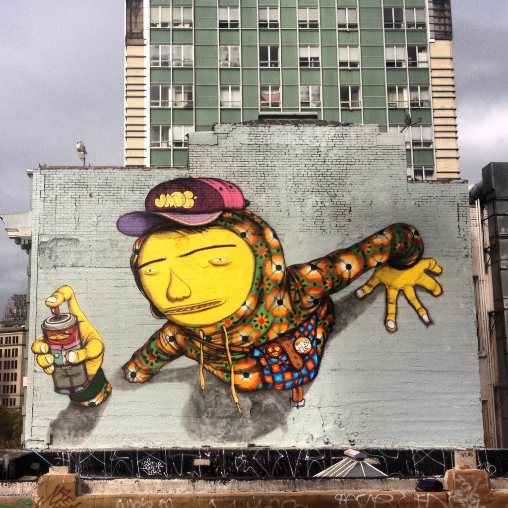

Surgimento do Graffiti do Brasil
A contracultura daquela época chegou a refletir no Brasil, trazendo resultados imediatos na música e no movimento tropicalista. Mas a periferia de São Paulo não demorou muito para seguir os passos das grandes metrópoles mundiais e também começou a usar o grafite como forma de expressar artisticamente suas opiniões contra outras as imposições culturais.
Tomando mais força no início da década de 1980, o grafite na capital paulista virou polêmica, sendo considerado vandalismo e pichação, ou admirados pelos urbanistas como arte e forma de expressão artística.
Um exemplo brasileiro de um dos grandes nomes dessa arte, como Basquiat e Keith Haring, é o italiano Alex Vallauri, que morreu jovem, aos 37 anos. O dia de sua morte, 27 de março, é a data em que é celebrado o Dia do Grafite no Brasil.
Em comum, os artistas brasileiros têm o fato de terem iniciado a escrever em muros como pichadores, ainda de forma clandestina. Hoje, eles conseguiram conquistar espaço nas capitais urbanas, sendo cada dia mais presente no cotidiano.
Grandes nomes do grafite no Brasil
O grafite brasileiro evoluiu muito de Vallauri para cá e, além de já ser considerado por cada vez mais pessoas como expressão da arte contemporânea, essa expressão já conta com grandes nomes nacionais expondo em grandes painéis ao redor do mundo.
Kobra

Kobra é outro dos artistas mais famosos do Brasil na arte do grafite. Autor do maior mural grafitado do mundo — “Chocolate”, com 5.742 metros” — Eduardo Kobra também tem grande parte de suas obras espalhadas pelo mundo. Em contraponto ao estilo mais lúdico da dupla Osgemeos, Kobra usa o realismo carregado de cores como marca pessoal.
Binho Ribeiro
Um dos pioneiros do street art no Brasil e América Latina desde 1984. O artista conquista respeito por onde passa: San Thiago, Buenos Aires, Nagoya, Tókyo, Osaka, Paris, Los Angeles, Miami, NYC, Quito, Lima, Turim, Cape Town, Hong Kong, Beijing, Amsterdan, Bruxels, Berlin, Accra, Ghana, Tunisia e quase todos os estados brasileiros já foram palco de seu talento.
Os gêmeos

Os gêmeos talvez sejam o maior expoente brasileiro do grafite e têm painéis expostos nas maiores cidades do mundo, incluindo a fachada do museu nacional de arte moderna do Reino Unido, o Tate Modern, obra de 2008.